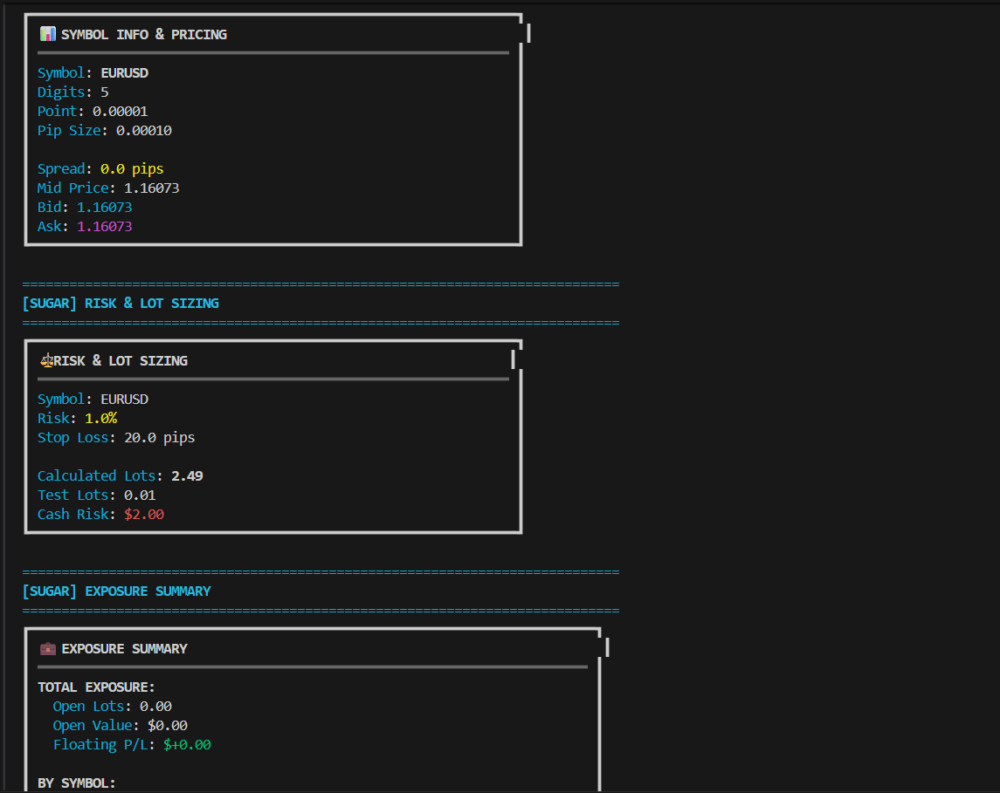

🎯 Main Demo Scripts - Overview¶
Welcome to the Main folder! This is your starting point for understanding how to use PyMT4 SDK through practical, runnable examples.
📚 What's in this folder?¶
This folder contains 4 demonstration scripts that showcase different aspects of the PyMT4 SDK:
| Script | Purpose | Complexity | Best For |
|---|---|---|---|
| main_low_level.py | Raw MT4 RPC calls | 🔴 Advanced | Full control, learning internals |
| main_sugar.py | High-level Sugar API | 🟢 Beginner | Quick development, readable code |
| main_streams.py | Real-time streaming | 🟡 Intermediate | Live data, event-driven apps |
| main_trade_mod.py | Order modifications | 🟡 Intermediate | Trade management workflows |
🔧 main_low_level.py¶
What it does¶
Demonstrates low-level MT4 SDK methods without any sugar wrappers. This is the raw RPC surface that gives you complete control over every operation.
Key Features¶
- Direct access to all MT4 RPC methods
- Quote fetching (
quote,quote_many,quote_history) - Symbol management (
symbols,symbol_params_many) - Order operations (
order_send,order_modify,order_close_delete) - Streaming APIs (
on_symbol_tick,on_trade,on_opened_orders_tickets) - Account information (
account_summary)
When to use¶
✅ When you need maximum control over every parameter
✅ When building custom trading logic that doesn't fit sugar abstractions
✅ When learning the SDK internals and understanding how things work under the hood
✅ When optimizing performance by avoiding wrapper overhead
Example Output¶

🍬 main_sugar.py¶
What it does¶
Showcases high-level sugar methods that wrap low-level calls with sane defaults and readable syntax. Perfect for rapid development and quick prototyping.
Key Features¶
- Simplified connectivity (
ensure_connected,ping) - Symbol helpers (
ensure_symbol,digits,point,pip_size) - Market calculations (
spread_pips,mid_price,calc_lot_by_risk) - Easy order placement (
buy_market,sell_market,buy_limit) - Quick modifications (
modify_sl_tp_by_pips,modify_sl_tp_by_price) - Batch operations (
close,close_all)
When to use¶
✅ When you want fast development with minimal boilerplate
✅ When readability is more important than fine-grained control
✅ When building simple strategies without complex edge cases
✅ When onboarding new developers who need quick wins
✅ When prototyping ideas before optimizing
Example Output¶

📡 main_streams.py¶
What it does¶
Demonstrates server-streaming APIs for real-time subscriptions. Shows how to consume async streams and handle cooperative cancellation.
Key Features¶
- Real-time tick streaming (
on_symbol_tick) - Trade event monitoring (
on_trade) - Order ticket updates (
on_opened_orders_tickets) - Profit/loss tracking (
on_opened_orders_profit) - Cooperative shutdown with cancellation events
- Back-pressure handling and debouncing
When to use¶
✅ When you need real-time market data without polling
✅ When building event-driven applications that react to changes
✅ When monitoring positions and need instant updates
✅ When creating live dashboards or charting applications
✅ When tracking P&L in real-time
Example Output¶

✏️ main_trade_mod.py¶
What it does¶
Focuses on trade modification flows: placing, modifying, and closing orders. Shows common sequences like order_send → order_modify → order_close.
Key Features¶
- Market and pending order placement
- Stop-loss and take-profit modifications
- Partial position closing (
close_partial) - Position hedging (
close_by) - Order state verification (
opened_orders) - Price and lot normalization
When to use¶
✅ When building trade management systems
✅ When implementing trailing stops or dynamic SL/TP
✅ When scaling in/out of positions
✅ When hedging positions with opposite orders
✅ When testing order modification logic
Example Output¶

🚀 Quick Start Guide¶
1. Choose your starting point¶
New to PyMT4? → Start with main_sugar.py Need real-time data? → Check out main_streams.py Building trade logic? → Look at main_trade_mod.py Want full control? → Explore main_low_level.py
2. Run the script¶
# Make sure PyMT4 is installed
pip install PyMT4
# Run any demo script
python main_sugar.py
python main_streams.py
python main_low_level.py
python main_trade_mod.py
3. Modify and experiment¶
All scripts are designed to be:
- ✅ Self-contained - Run without external dependencies
- ✅ Well-commented - Understand what each line does
- ✅ Easy to modify - Change symbols, lots, parameters
- ✅ Production-ready patterns - Use as templates for your own code
🎓 Learning Path¶
Beginner Path¶
- Start with main_sugar.py to understand high-level concepts
- Experiment with different symbols and lot sizes
- Add your own calculations and logic
- Read the Sugar API documentation
Intermediate Path¶
- Study main_streams.py for real-time data handling
- Learn main_trade_mod.py for order management
- Combine sugar methods with custom logic
- Explore Strategy System
Advanced Path¶
- Dive into main_low_level.py for full control
- Read Low-Level API documentation
- Build custom wrappers for your specific needs
- Optimize performance with direct RPC calls
📖 Related Documentation¶
Core Concepts¶
- Sugar API Overview - High-level API reference
- Low-Level API Overview - Complete RPC method list
- Architecture Guide - How everything fits together
Advanced Topics¶
- Orchestrators - Pre-built trading workflows
- Presets - Risk and strategy configurations
- Project Map - Full project structure
Reference¶
- Glossary - All trading and technical terms explained
- Examples Guide - Complete examples overview
💡 Tips for Success¶
1. Start Small¶
Don't try to understand everything at once. Pick one script, run it, modify it, break it, fix it.
2. Use Print Statements¶
Add print() calls to see what's happening at each step. Understanding data flow is key.
3. Check Error Messages¶
MT4 errors are descriptive. Read them carefully - they usually tell you exactly what's wrong.
4. Test on Demo Account¶
Always test new code on a demo account first. Real money comes after thorough testing.
5. Keep It Simple¶
Start with simple strategies. Complexity should emerge from proven simple components.
6. Version Control¶
Use git to track your experiments. You'll want to roll back changes sometimes.
🔗 Quick Links¶
| Topic | Link |
|---|---|
| Full Examples Guide | All_about_examples.md |
| Sugar API Reference | MT4Sugar Overview |
| Low-Level API Reference | MT4Account BASE |
| Architecture & Data Flow | ARCHITECTURE.md |
| Glossary | GLOSSARY.md |
| Project Structure | PROJECT_MAP.md |